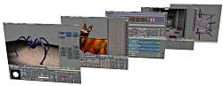

Введение
Экраны и Окна
{kind=link}
Увеличенное изображение - по левой кнопке мыши.
Один файл Blender может иметь неограниченное количество экранов.
Любой экран может быть разделен на окна, каждое из которых может выполнять разные функции.У каждого окна есть заголовок. Пользователь может перемещать вверх или вниз по своему усмотрению. Крайняя левая кнопка показывает тип окна в виде пиктограммы.
Как и в любой другой оконной системе, только одно окно является активным в определенный момент времени, и только оно принимает ввод с клавиатуры и мыши.
Для того чтобы изменить размеры окна подведите курсор к его краю. Когда он изменит форму, нажмите левую кнопку мыши и, удерживая ее, переместите границу окна. Для разделения окна используйте среднюю кнопку мыши, а для того чтобы убрать разделение - правую.
Обычно вверху экрана расположено окно информации (Info). На нем написано название Сцены и Экрана; также на него выводится большое количество технической информации. Если вы потянете за край окна, то увидите окно "пользовательские настройки" (user options), о которых мы расскажем чуть позже.
Наиболее важные типы окон:
- 3DWindow. Служит для показа Объектов в одном из трех видов визуализации: проволочного каркаса (wireframe), однородно закрашенных моделей (solids) или моделей с затенением Гуро (Gouraud shaded).
- ButtonsWindow. Пиктограммы типов блоков.
- IpoWindow. Для анимационных кривых и ключевых кадров анимации вершин.
- OopsWindow. Схематическое представление блоков данных в виде диаграммы.
- SequenceWindow. Окно видео монтажа и пост-обработки (post-production).
- FileWindow. Окно загрузки или сохранения файлов.